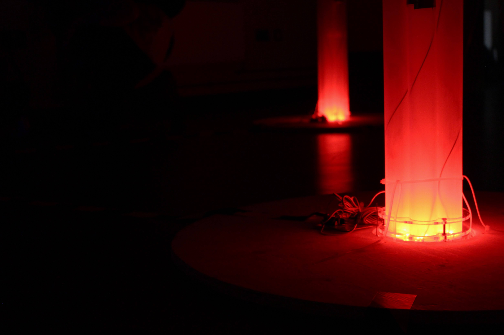
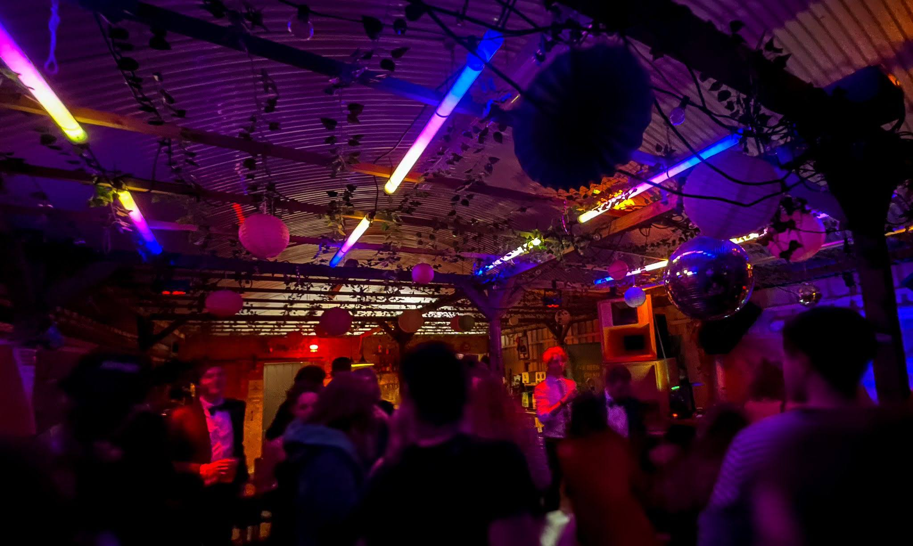
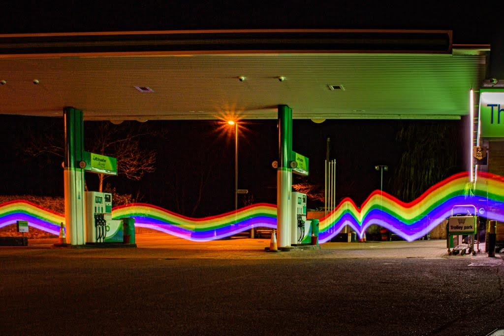
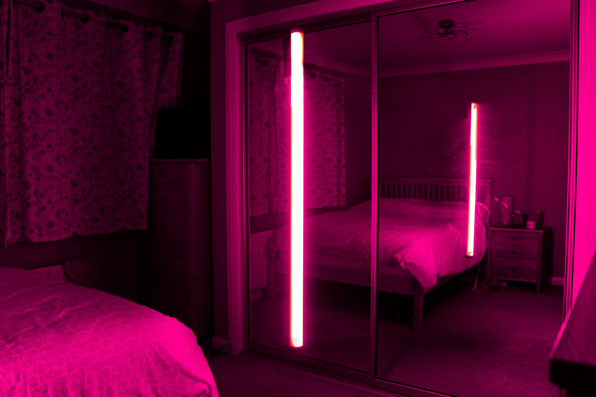
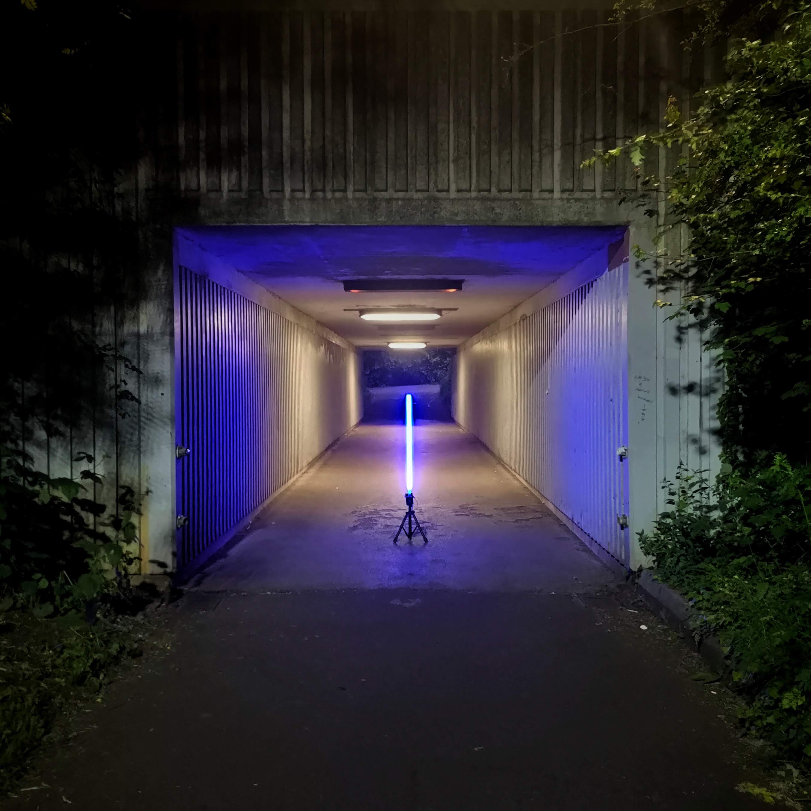

The Swarm Forest. 2025. A audio-visual art installation inspired by swarm robotics designed and built with the CA:VE team. Using lights and sound we encourage the audience to participate as a 'human swarm' to collectively create an emergent art piece.

The Emergent Forest. 2022. An earlier iteration of The Forest focusing on emergence and how an individual's interactions impact the collective.

Luminate. Ongoing. A long term project with the aim of transforming spaces to create other-worldy experiences. This includes building light installations and providing event lighting. The Lumistick is a 1m light tube, 6 of which connect to a central control box, all packable into a single bag.

Rainbows in the night. 2021. An autonomous surface vessel designed for crossing oceans. 3m, self-righting, internal power, twin drive, custom hull design with payload space for environmental monitoring.

Hover. 2021. A lockdown project about the supernatural. No AI was used in the making of this piece, instead a clever use of a tube light and some photo editing skills gives this alien-like scene.

Spacechanger. 2020. An early Luminate project designed to change the feel of a space by lighting it in a unique way. One of a series of images that were taken in urban, often uninviting spaces with an attempt to add some beauty and mystery to the scene.